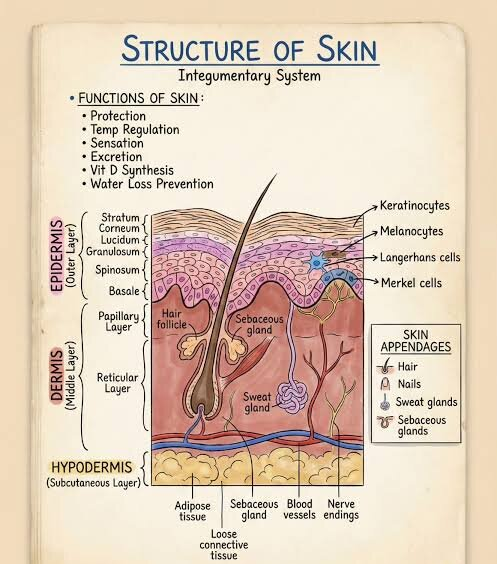

Integumentary System: The Skin as an Organ
The body's outer covering: barrier, thermostat and sensor in one.
| Your syllabus line | Where it is on this page |
|---|---|
| Integumentary system: skin structure | 1 (what it includes), 2 (epidermis, dermis, hypodermis), 3 (hair, nails, glands), 4 (receptors) |
| Skin functions | 1 and 4 (protection, temperature, sensation, excretion, vitamin D, water-loss prevention) |
| Exercise physiology: musculo-skeletal system in yogic practices | 5 (skin, sweating and temperature in practice) |

- Integumentary system = skin + hair + nails + sweat glands + sebaceous (oil) glands + sensory receptors. “Integument” means covering.classPDF
- Epidermis – outer layer; keratinised stratified squamous epithelium; no blood vessels.class
- Dermis – middle layer of connective tissue: papillary (loose) and reticular (dense) parts.class
- Hypodermis – fat and loose connective tissue beneath; not part of the skin proper.PDF
- Appendages – hair, nails, sweat and sebaceous glands.class
1AWhat the skin does
| Function | How |
|---|---|
| Protection | Physical barrier; keratin resists friction; blocks many microbes; melanin partly shields DNA from UVPDF |
| Temperature regulation | Sweat evaporation cools; skin blood vessels dilate or narrow; fat insulatesPDFgeneral |
| Sensation | Touch, pressure, pain and temperature receptorsPDF |
| Excretion | Small amounts of salts and urea in sweatPDF |
| Vitamin D synthesis | Made in skin with sunlightPDF |
| Water-loss prevention | Lipid barrier of the outer layersPDF |
Skin is a living raincoat with sensors. The outer layer is a tough waterproof coat of dead, keratin-filled cells that is shed and renewed all the time. Under it is a strong, stretchy layer with blood vessels and nerves; under that, a fat cushion. Without it we would lose water, catch infections and could not control temperature.PDF
P-T-S-E-V-W: “Protect, Temperature, Sense, Excrete, Vitamin D, Water-keep.” Layers outside to inside: E-D-H (Epidermis, Dermis, Hypodermis).added
Epidermis, Dermis and Hypodermis
Three layers: renewing barrier, strong supply layer, fat cushion.
2AEpidermis
| Cell | Job |
|---|---|
| Keratinocytes | Most numerous; make keratin; barrier and friction resistancePDF |
| Melanocytes | Make melanin: colour and partial UV protection (tanning increases melanin)PDF |
| Langerhans cells | Immune cells that spot foreign substancesPDF |
| Merkel cells | Linked to sensory nerves; light touch and fine detailPDF |
| Layer (deep to surface) | Features |
|---|---|
| 1. Stratum basale (germinativum) | Deepest; single layer; dividing stem cells renew the skin; melanocytes and Merkel cellsPDF |
| 2. Stratum spinosum | Several layers joined by desmosomes; strength against stretch; cells look spinyPDF |
| 3. Stratum granulosum | Granules; makes the water-resistant lipid barrierPDF |
| 4. Stratum lucidum | Thin clear layer; only in thick skin (palms, soles)PDF |
| 5. Stratum corneum | Many layers of dead, flat, keratin-filled cells; shed and replaced; barrier against friction, water loss and microbesPDF |
Deep to surface: Basale, Spinosum, Granulosum, Lucidum, Corneum = “Before Signing, Get Legal Counsel” (from your PDF).PDF
Epidermis has no blood vessels; it is fed by diffusion from the dermis. Thick skin has 5 layers, thin skin 4 (no lucidum). Melanin protects only partly.PDF
2BDermis
| Papillary layer | Reticular layer | |
|---|---|---|
| Position | Superficial | Deeper and thicker |
| Tissue | Loose connective tissue | Dense irregular connective tissue (collagen) |
| Contents | Small vessels, sensory endings, dermal papillae | Larger vessels, nerves, hair follicles, glands, receptors |
| Job | Feeds the epidermis; ridges (fingerprints) in palms and soles | Strength, structure, flexibility |
- Dermis parts: collagen (strength), elastic fibres (stretch and recoil), fibroblasts (make collagen, elastin, repair).PDF
- Dermis holds blood and lymph vessels, nerves, receptors, hair follicles and glands; the gland ducts open through the epidermis.PDF
- Fingerprints are ridge patterns formed by the dermal papillae and stay stable through life.PDF
| Epidermis | Dermis | |
|---|---|---|
| Tissue | Keratinised stratified squamous epithelium | Connective tissue |
| Blood vessels | Absent | Present |
| Main cells | Keratinocytes (+ melanocytes, Langerhans, Merkel) | Fibroblasts |
| Main proteins | Keratin | Collagen and elastin |
| Role | Barrier and protection | Strength, elasticity, nourishment, sensation |
2CHypodermis (subcutaneous tissue)
- Loose connective tissue + adipose (fat) + vessels + nerves. Not part of the skin proper.PDF
- Jobs: store energy, insulate, cushion against shock, attach the skin while letting it move.PDF
“Describe the structure of the skin.” Draw the diagram with epidermis (five strata), dermis (papillary, reticular), hypodermis, hair follicle, sebaceous and sweat gland, vessels, receptors. Add: epidermis avascular; dermis vascular.
Hair, Nails and Skin Glands
Extensions of the skin: keratin structures and two kinds of gland.
3AHair
| Part | Description |
|---|---|
| Hair shaft | The part above the skinPDF |
| Hair root | Part inside the folliclePDF |
| Hair bulb | Expanded base of the rootPDF |
| Hair matrix | Dividing cells that build the shaftPDF |
| Dermal papilla | Vessel-rich tissue that feeds the hairPDF |
- Functions: protection in some regions, filtering particles (nose), protecting the eyes (eyelashes), detecting movement, some sun and heat protection on the scalp.PDF
- No hair follicles on the palms and soles.PDF
3BGlands
| Eccrine sweat | Apocrine sweat | Sebaceous | |
|---|---|---|---|
| Where | Widespread; most on palms, soles, forehead | Armpits, genital region | With hair follicles; absent from palms and soles |
| Starts | Early life | Puberty | – |
| Secretes | Watery sweat to the skin surface | Into hair follicles; richer in organic substances | Sebum (oil) |
| Job | Cooling by evaporation; small excretion of salts and urea | Not the main cooling glands; bacteria cause odour | Lubricates skin and hair; surface barrier; excess can cause acne |
When body temperature rises, eccrine sweating rises and evaporation removes heat. In high humidity evaporation is less effective, so sweating alone does not guarantee cooling (for example during Surya Namaskar in a warm room).PDF
3CNails
- Hard keratin plates on fingers and toes. Parts: nail plate, nail bed, nail root, nail matrix, lunula, eponychium (cuticle).classPDF
- Jobs: protect fingertips and toe tips, give a firm surface to press against, help pick up small objects, improve fine touch.PDF
Eccrine = Everywhere, cooling. Apocrine = Armpits, odour. Sebaceous = Sebum = oil.added
Eccrine, not apocrine, are the main cooling glands. Sebaceous glands are oil glands, not sweat glands. Keratin is the protein in epidermis, hair and nails.PDF
Sensory Receptors and Temperature Regulation
How the skin senses the world and keeps the body at a steady temperature.
| Receptor | Where | Detects |
|---|---|---|
| Free nerve endings | Throughout skin | Pain, temperature, itch, some touchPDF |
| Merkel cell-neurite complex | Base of epidermis | Sustained light touch, edges, texturePDF |
| Meissner corpuscles | Dermal papillae of fingertips and palms | Light touch, low-frequency vibrationPDF |
| Pacinian corpuscles | Deep dermis, hypodermis | Deep pressure, high-frequency vibrationPDF |
| Ruffini endings | Dermis | Skin stretchPDF |
| Hair follicle receptors | Around follicles | Hair movementPDF |
4ASkin and temperature control (Yoga & Human Body notes)
| Body is too hot | Body is too cold |
|---|---|
| Sweating increases; skin blood vessels dilate (vasodilation)general | Skin vessels narrow (vasoconstriction); shivering; more metabolic heatgeneral |
- Control centre: hypothalamus. Heat made by muscle activity, metabolism and hormones; lost by radiation, conduction, convection, evaporation.general
Light touch = Meissner and Merkel, deep pressure and vibration = Pacinian, pain and temperature = free nerve endings.added
Skin and Yogic Practice
Sweating, temperature and touch in practice.
- Sweating during vigorous practice (Surya Namaskar, exercise in warmth) is eccrine cooling; evaporation is less effective in humid air, so sweating alone does not guarantee cooling.PDF
- Skin receptors in the hands and feet (Meissner, Pacinian, Merkel) give the touch and pressure feedback that helps balance and grounding. This is a link added here from receptor function; your notes do not write it directly.added
- Muscle work makes heat; the skin gives it off. Muscle activity is one of the main heat sources (Yoga & Human Body notes), and skin vessels dilating and sweating are the main ways of losing it.general
“Functions of skin” is a typical short note: protection, temperature regulation, sensation, excretion, vitamin D, water-loss prevention, with one line each. Pair it with structure (epidermis, dermis, hypodermis) in a 5-mark question.
Sources: class notes (integumentary, typed); Integumentary System – M.Sc. Study Notes (teacher's PDF, includes the skin diagram); Yoga & Human Body notes (skin functions, temperature regulation); Ross & Wilson ch. 14 (The skin); standard texts for the “general” tags. Mnemonics tagged “added” are made up for these notes.